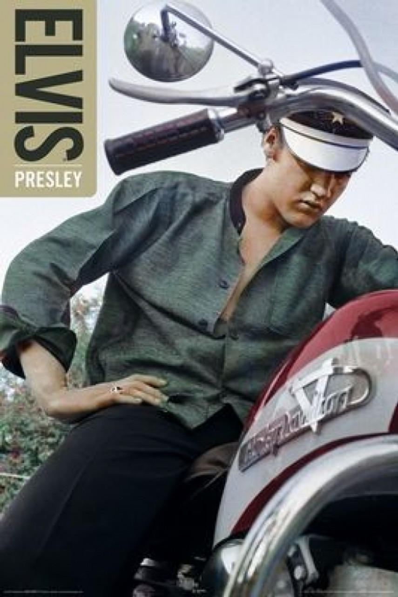

Elvis Presley (Tupelo, Estados Unidos, 1935 - Memphis, 1977) Cantante de rock and roll y actor
estadounidense. Nacido en el seno de una familia modesta, por lo que empezó a trabajar desde joven,
a los 11 años, y ante su insistencia, sus padres le regalaron su 1era guitarra. En 1948, su familia
se trasladó a Memphis. A los 19 años, el productor Sam Phillips, propietario de Sun Records, editó
un single con That's all right y Blue, Moon of Kentucky abriendole las puertas del programa radiofónico
de música country: Louisiana Hayride. En 1956 con Heartbreak Hotel (RCA) ganó el 1ero de sus discos
de oro, editó su 1er elepé: Elvis Presley y se comprometió por 7 años con los estudios cinematográficos
Paramount. Como culminación del meteórico año de 1956, el 16 de noviembre se estrenó en Nueva York Love me tender, el 1er film que protagonizó Elvis Presley.
En marzo de 1957 adquirió la mansión de Graceland, Memphis. En 1958, en el cenit de su carrera, fué
llamado a filas por el ejército y destinado a Berlín Occidental, donde conoció a Priscilla Ann Beaulieu,
con quien contraería matrimonio 9 años después. Elvis Presley se licenció en marzo de 1960, reanudando su actividad artística con una larga serie de números 1 en las listas estadounidenses
como It's now or never o Are you lonesome tonight? y protagonizar no menos de 10 películas, ej: Girls, girls, girls (1962) y Viva Las Vegas (1964).
En la 2da mitad de la década comenzó la «Invasión británica», con The Beatles, Rolling Stones;
lo que lo sumerge en una crisis hasta 1968, cuando se le ofreció protagonizar un especial televisivo que se convirtió en uno de los
mayores éxitos de la historia de la TV. Los 1eros años de la década de 1970, Elvis Presley pasa por otro
bache creativo, agravado por su adicción a las drogas y la reclusión en su mundo de
fantasía en su mansión de Graceland. En 1973 se divorcia de Priscilla Beaulieu y su imagen cambia: exagerado tupé, sobrepeso y trajes de cuero blanco con pedrería.
Tras caer inconsciente en varias ocasiones en el escenario, falleció de un ataque al corazón, sin duda consecuencia de sus excesos. Elvis Presley se ha convertido en un icono del siglo XX, como atestiguan sus más de 100 discos de
oro, platino y multiplatino.
Conoce más

 Janis Joplin
Janis Joplin